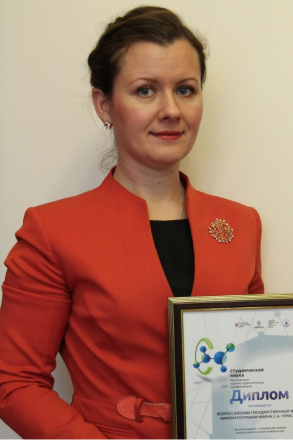

Факультет осуществляет профессиональную подготовку режиссеров игрового, неигрового, анимационного фильма; звукорежиссеров. Выпускники факультета работают в области кино и телевидения. На конкурсной основе принимаются лица, имеющие природную склонность к художественному творчеству, обладающие необходимыми для овладения профессией знаниями в области литературы и искусства, культурным уровнем и запасом жизненных наблюдений.
За время обучения студенты выполняют несколько практических съемочных заданий, основные из которых – учебная, курсовая, дипломная киноработы.
На факультете работают курсы профориентации «Профессия – режиссер». Набор слушателей осуществляется дважды – в сентябре и феврале.
Основные дисциплины по специальности:
Специальные профессиональные дисциплины:
Общепрофессиональные дисциплины:
Общегуманитарные дисциплины:
Заведующий кафедрой режиссуры игрового фильма
профессор, Народный артист РФ
Владимир Иванович Хотиненко
телефон кафедры режиссуры игрового фильма
8 (499) 181-50-85
Заведующий кафедрой режиссуры неигрового фильма
профессор, Народный артист РФ
Виктор Петрович Лисакович
телефон кафедры режиссуры неигрового фильма
8 (499) 760-23-87
Заведующий кафедрой звукорежиссуры
кандидат искусствоведения, доцент
Русинова Елена Анатольевна
телефон кафедры звукорежиссуры
8 (499) 181-06-05
Заведующий кафедрой телевидения
кандидат искусствоведения, зам. генерального директора телеканала «Россия» (ВГТРК), член Академии Российского телевидения
Шумаков Сергей Леонидович
телефон кафедры режиссуры неигрового фильма
8 (499) 760-23-87
Адрес:
129226, г. Москва, ул. Вильгельма Пика, д.3. ВГИК
Телефон деканата:
8 (499) 999-99-99
E-mail:
operator_vgik@mail.ru